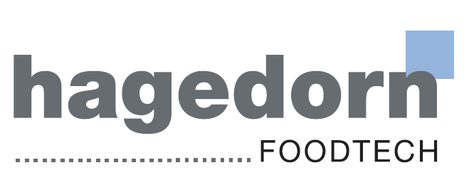

01
Eines de Tall
Solucions integrals per a processos de tallatge precisos, dissenyades per suportar els volums més alts de producció.
Veure mésEines que responen a la màxima exigència de la línia de producció.
Solucions integrals per a processos de tallatge precisos, dissenyades per suportar els volums més alts de producció.
Veure mésFulles de serra dentades optimitzades per al sector alimentari. Talls nets que redueixen el minvament.
Veure mésSegellat i tall perfecte a cada envàs. Compatibilitat total amb línies Multivac, Tiromat, Dixie i Ulma.
Veure mésDiscos dissenyats per a llescats a alta velocitat sense comprometre la integritat de l'aliment.
Veure mésEficiència tèrmica superior per a un segellat segur, resistent i absolutament impecable.
Veure mésConsumibles de rectificat i esmolat PRIMEdge per mantenir el tall sempre a punt a la teva planta.
Veure mésGanivetes de llescat d'alta velocitat dissenyades a Alemanya. Minimitzen la merma de producte i garanteixen la màxima durabilitat del tall.
Recobriment de baix coeficient de fricció ideal per a línies automàtiques de llescat continu a més de 1.500 RPM. Evita el sobreescalfament i manté la textura intacta.
Acer aliatge especial sotmès a un procés de tremp criogènic que eleva la duresa del fil fins als 64 HRC, oferint una durabilitat fins a 3 vegades superior.
Tractament superficial antiadherent de PTFE/DLC que impedeix que els formatges de doble crema i el bacó gras s'enganxin a la fulla durant el llescat.
Som els teus aliats estratègics en eines de tall industrial i esmolat professional. Assegurem el rendiment òptim de la teva línia perquè el teu equip de manteniment tingui tot sota control i tu només et preocupis del teu producte final.
Descobreix els nostres ServeisLes nostres ganivetes i serveis d'esmolat estan adaptats a les exigències de seguretat i higiene de cada producte.
Escorxadors i sales de desballestament
Llescat, tall en blocs i formats especials
Processament d'aviram i producte marítim
Farinacis, masses i pastisseria industrial
Plats preparats, llescats ràpids i envasats
Aplicacions industrials i a mida
Retornem a les teves eines l'angle de tall original de fàbrica. Menys desgast, més vida útil per a la teva maquinària.
Més informacióCapacitem els teus operaris per al manteniment i ús òptim de cada eina. El coneixement in-situ és rendiment.
Més informacióAnalitzem els teus processos per recomanar-te solucions. Resposta ràpida i eficient per minimitzar els temps d'inactivitat.
Més informacióL'excel·lència compartida amb els millors del sector.
